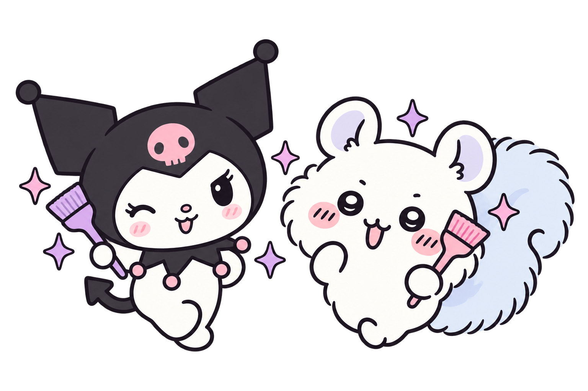

先看作品，再決定
把喜歡的造型收藏起來，諮詢時直接給 Kiki 看。
日系短髮 · 二次元髮色 · 客製區塊染
歡迎來到 Kiki 的魔法部屋，
一起找到剛剛好的可愛，和只屬於你的個性。

你的專屬魔髮師KIKI’S COLOR DIARY — 每一種喜歡，都有自己的顏色
把喜歡的造型收藏起來，諮詢時直接給 Kiki 看。
漂髮、特殊色與整理方式，預約前先確認最適合你的做法。
填好需求後複製清單，直接貼到 LINE 和 Kiki 聊聊。
從日常的溫柔，到大膽的二次元。把喜歡的造型先收進口袋。
作品摘自 Kiki 提供的 Instagram 畫面。點擊照片可放大查看；實際造型依髮況討論。
還沒決定染什麼？先用自己的照片，和新顏色打個招呼。
選擇光線清楚、頭髮完整入鏡的照片。
JPG、PNG、WebP，最大 15 MB
照片不會上傳或自動儲存。
自動辨識後，可用筆刷補上漏掉的頭髮，或擦除誤選的皮膚與背景。
上傳照片後，就可以開始試色。
先抓一下預算，再一起討論最適合你的方案。
喜歡日系層次，也喜歡把二次元的顏色帶進日常。
小貓短髮、特殊髮色、客製區塊染，
都可以從你的一個小小靈感開始。
還不確定適不適合？把喜歡的照片帶來，
我們一起討論髮況、預算，和你想要的樣子。
詳細地址、可預約時段請透過 LINE 確認。
不用想得很完整。選幾款喜歡的作品，或說說你想改變的地方。
先收藏喜歡的作品，也可以使用髮色魔法鏡試色，再把目前髮況照片傳給 Kiki 討論。
不等於。照片試色是風格參考，底色、染燙紀錄、髮質與光線都會影響成果，是否需要漂髮及可達到的效果須先評估。
還不算。網站會整理諮詢內容，請複製並透過 LINE 傳給 Kiki，收到她回覆確認日期、時間及服務後才算完成預約。
試色照片只在本次頁面的裝置記憶體中處理，離開或重新整理就會清除。表單不會傳到網站伺服器；只有你主動貼到 LINE 的內容才會交給 Kiki。收藏作品則保留在本機瀏覽器。